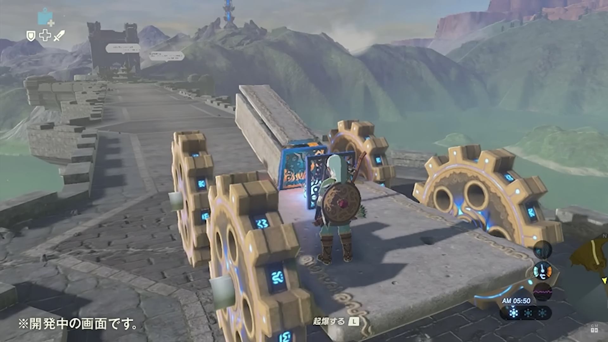

Part 2: Development
Tears of the Kingdom's development process began almost immediately after the completion of Breath of the Wild. It was produced by Eiji Aonuma and directed by Hidemaro Fujibayashi.
While there aren't official records of the total development time, judging by the gap between the two game' releases Tears of the Kingdom's development took roughly 6 years.
The game was originally pitched as an idea when the Zelda team had come up with too many ideas for expansions to Breath of the Wild, which had already received two content expansions. The goal was to revisit
the same world of Breath of the Wild and massively expand it, adding new layers to the open world and bringing new mechanics that developed exponentially on the groundwork laid by it's predecessor.
One of these early ideas was the ability to "build" contraptions by attaching parts together. This idea originally came from a developer who created a car while messing around by attaching some assets from Breath of the Wild together. See below a screenshot of some early development footage, featuring a makeshift car with wheels and even a cannon attached on top.
Very early footage of development
From here the team gradually developed this building system over the course of the development cycle. It would eventually become "Ultrahand", one of the player's four signature abilities they have access to. On paper it's very simple, it allows the player to attach any movable objects together with a glue-like substance. However, it quickly becomes an incredibly powerful tool, being able to create combinations of different devices attached together to create complex and powerful vehicles and contraptions. This also greatly contributed to Tears of the Kingdom's unique puzzle-solving, which is very important to the Zelda Series.
Alongside Ultrahand, another highly advanced ability called Fuse was implemented. This allowed the player to attach anything in the game to their weapon, shield or bow (and I mean anything. Any movable game object was designed and intended to be used as a fuse material). This could be anything from attaching a slain monster's horn to your sword to increase it's attack power, attaching a a mushroom to your arrow and shooting it into an enemy camp to create a smokescreen, or even attaching a rocket to your shield to fly into the sky. This system allowed for endless player creativity, perfectly mimicking the principles of the Ultrahand system in the game's equipment system, an area of RPGs that would typically never see such ingenuity.
Besides these two pivotal abilities, Tears of the Kingdom also featured some others. See below a table of all the abilities granted to the player.
| Ability | Point Gained | Short Summary |
|---|---|---|
| Ultrahand | Tutorial Sequence | Attaches any movable objects each other. |
| Fuse | Tutorial Sequence | Attaches any movable objects to the player's equipment. |
| Ascend | Tutorial Sequence | Passes through anything solid above the player and comes out on top. |
| Recall | Tutorial Sequence | Rewinds time for any movable object, tracing its path backwards. |
| Autobuild | Early-mid game, The Depths | Automatically re-creates anything the player has made with Ultrahand. |
| Camera | Early game, The Surface | Takes pictures. You can even take a selfie! |
The wheel the player uses to select their ability. The two selections here that I didn't mention are just shortcuts for other features and aren't abilities.
While returning to the same world was one of Tears of the Kingdom's goals, leaving the world the exact same as it was would be boring and unineresting for returning fans. The Zelda team knew from the beginning that the world would have to be expanded. There solution to this was instead of expanding horizontally, they expanded vertically, with two new layers above and below the surface of the game world.
- In the sky, players could discover floating Sky Islands, peaceful oases of the sky that provided peace from the monsters roaming the surface but proved challenging to navigate, requiring the player to be inventive with flying vehicles or launching contraptions.
- Below the surface, a colossal network of caverns called The Depths could be found, a dark and gloomy place that is completely shrouded in darkness once the player arrives. Players would have to get creative in order to light their way as they navigated the shadowy abyss.
The addition of the Sky Islands and the Depths creating a unique dynamic as the player explores the game's world. while exploring the surface, a player could stumble across a Skyview Tower, launching them into the clouds where they may discover a Sky Archipelago. And whilst exploring these Sky Islands, a player could spot a glowing chasm below, and they could freely dive from the floating island into the chasm, leading them to the Depths. And while in the Depths, they could find an access point back to the surface, where they could discover something else. This exploration loop os one of the things that makes Tears of the Kingdom's world so impeccably designed, and I personally believed the Zelda team more than achieved the goals they set out for.
While I could keep talking more about Tears of the Kingdom's development principles and design philosophies, I'd probably be here until long after this website's due date. However I believe the information here is the most funamdental principles of Tears of the Kingdom's design. Understanding what the idea was when this game was being formulated is one of the biggest steps in order to understand it's true worth.
Continue to Part 3: Announcement Schedule to learn about Tears of the Kingdom's announcement schedule leading up to release!